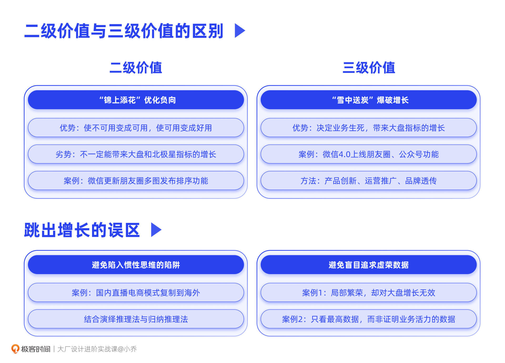

- 00 开篇词 升维思考，是设计师有效成长的第一步.md.html
- 01 业务周期：0-1-10-100-N的发展策略.md.html
- 02 商战模式：如何在商业竞争下突出重围？.md.html
- 03 市场洞察：如何找寻差异化撬动支点？.md.html
- 04 用户洞察：不懂用研的设计师不是好职场人.md.html
- 05 用户画像：是形式主义还是真的有效？.md.html
- 06 用户旅程：挖掘不同用户的核心机会点.md.html
- 07 职场晋升：看懂晋升的“游戏规则”.md.html
- 08 设计价值升级：五层进阶突破成长.md.html
- 09 基础价值 核心三原力：如何将需求转化为设计稿？.md.html
- 10 基础价值 第一性原理：从问题本质解决问题.md.html
- 11 基础价值 设计复盘：只是量化设计结果吗？.md.html
- 12 二级价值 负向网兜：如何全面发现负向问题？.md.html
- 13 二级价值 设计自驱：如何做好项目Owner？.md.html
- 14 二级价值 自驱合作：如何反内卷处理合作关系？.md.html
- 15 三级价值 增长误区：思维惯性陷阱和虚荣数据.md.html
- 16 三级价值 用户增长历程：AARRR是万能的吗？.md.html
- 17 三级价值 产品增长：如何做好产品创新？.md.html
- 18 三级价值 运营增长：如何自驱营销活动和投放？.md.html
- 19 三级价值 品牌增长 抢占心智，赢得人心红利.md.html
- 20 三级价值 增长实操：如何“步步为营”推动落地？.md.html
- 21 四级价值 L型赋能：让T型人才发挥更大价值.md.html
- 22 四级价值 “网状对比”解决共性痛点.md.html
- 23 五级价值 商业画布：设计师可以担任业务方吗？.md.html
- 24 五级价值 共创洞察：如何做好一次完善的workshop？.md.html
- 25 五级价值 领导力觉醒：写给新晋管理者.md.html
- 26 工作选择（上）：2B or 2C设计师？如何规划领域？.md.html
- 27 工作选择（下）：大厂 or 小厂？如何选择赛道？.md.html
- 28 人才地图：认知自我，成为高潜力人才.md.html
- 29 成长历程：如何从设计小白成长为团队负责人？.md.html
- 30 冰山模型：如何成为让面试官欣赏的“面霸”？.md.html
- 31 作品集指导：什么是面试官喜欢的作品集？.md.html
- 用户故事 什么是职场设计师进阶的正确姿势？.md.html
- 结束语 突破自我，成人达己.md.html
- 捐赠
15 三级价值 增长误区：思维惯性陷阱和虚荣数据
你好，我是小乔。
恭喜你，已经完成了二级价值的学习，踏上了实现三级价值的征程。还记得我们在第9讲中对三级价值的描述吗？我们一起来回顾下。
当我们可以高质量承接设计需求，并完整复盘时，就实现了一级价值；当我们可以自驱立项，按优先级解决负向问题时，就达成了二级价值；而当我们从差异化出发发起创新项目，带来业务增长时，就实现了三级价值。
因此，三级价值的核心就是给业务带来“爆破增长”，建立在我们实现前面两级设计价值的能力基础上，更进一步地洞察增长机会点，自驱推动增长项目落地。从三级价值开始，我们设计师就要开始放大招，突破他人对我们只会画图、只会修补体验问题的认知了。
在学习具体的增长实操方法之前，我们需要优先明白三级价值和二级价值的核心区别，理清做增长经常会走入的误区，了解完整的增长框架和增长模型。只有这样，我们才能掌握正确的增长方法，达到事半功倍的效果。那么，我们就先从三级价值为什么比二级价值更为进阶开始吧。
“锦上添花”还是“雪中送炭”
我曾经给我自己团队的同学讲过这五级设计价值进阶的概念，其中有一个同学就提问说：“小乔，二级价值和三级价值的区别是什么？不都是要自驱发现机会点，自驱推动落地吗？”
其实，二级价值和三级价值的核心区别在于，二级价值是“锦上添花”，而三级价值是“雪中送炭”。
二级价值，是指我们完整地找寻负向体验，并按优先级优化负向体验，让用户使用起来更为顺畅，这也就是我们常说的“体验优化”。经过我们的优化，也许可以带来一定数据的提升，比如某个产品的体验满意度提升了，或者用户使用某个功能的成功率提升了，但这些指标的提升不一定能够让我们的大盘数据有显著增长。大幅的增长，取决于解决的问题是否是致命问题。
举个例子，几年前我们在微信编辑朋友圈时，是不能调整图片顺序的，导致用户在对顺序不满意时，得删除照片再重新按顺序上传，如果还不满意，那就得再来一遍。这在很长时间里，造成了用户对朋友圈发布功能的负评与投诉。而微信在2017年优化了这个功能，照片可以通过拖动调整位置，使朋友圈发布起来更为顺畅和高效。
我们可以猜想到，这个优化落地后，用户发朋友圈的费力度会大大降低，对于朋友圈的满意度也会有所提升，但这样可以使IM产品的北极星指标提升吗？也许发消息数、发送消息的用户数并不会因此大幅提升，DAU、留存可能也不会因此有显著变化。
而三级价值，则是通过创新，通过找寻差异化机会点，再配合恰当的运营手段，为大盘数据、北极星指标带来突破和增长。
我们依旧以微信举例。微信在2.0和3.0时代，主要投入在关系链的沉淀上，包括熟人和陌生人。当时微信从腾讯系的其他产品中，将已有用户进行生态引流，也上线了附近的人、摇一摇、漂流瓶等陌生人社交功能。可以说，产品的增长方式主要依赖于腾讯生态引流和广告投放。
而在4.0时代，微信大力投入在社交关系链的盘活上，上线了朋友圈、公众号等功能。朋友圈以朋友之间的UGC与互动来增强用户活跃度，盘活关系链；公众号以开放多元的内容生态，进一步增加用户之间的互动与使用停留时长，使微信从一个IM工具成功转型为一个社交平台。这些创新突破的动作，使产品的增长方式从广告投放为主转变为自然增长为主，从4000多万的DAU增长到首次破亿。
通过这两个案例，相信你已经明白了二级设计价值和三级设计价值的区别。二级价值中，优化负向体验的能力在于解决现有问题，使业务因为体验的提升而更加完美，更像是“锦上添花”，但它不一定可以带来大盘数据的显著增长；而三级价值中，实现增长是一件需要创新突破的事情，它决定了这个业务是否可以在各个阶段都能强有力地存活下去，更像是“雪中送炭”。驱动业务增长，显然会比只是优化问题的含金量更加显著。
如果你可以为公司带来有效增长和良性发展，才是真正达成了三级价值。而在证明自己的突破和成长后，我们也会得到与产出结果对应的绩效与晋升回报，更值得振奋的是，我们的突破也许是可以影响行业发展的。
跳出增长的误区
理解了三级设计价值的作用后，有些同学可能已经蠢蠢欲动了。先别着急，我们先来看看做增长容易陷入的误区。因为只有先将误区排除，我们才能保证后续增长项目的大方向不会出现偏差。
增长的误区主要有两个：一个是陷入思维惯性的陷阱，另一个是盲目追求虚荣数据。
避免陷入思维惯性的陷阱
首先，我们一起来探讨第一个增长误区，陷入思维惯性的陷阱。什么是思维惯性呢，就是我们根据其他产品做成功的方式，或者自己曾经做项目成功的经验，盲目地以为“这一次”也可以通过同样的方法获得成功。思维惯性本身并不是一件负向的事情，但盲目复制是万万不可取的，如果我们不能根据新项目的实际情况进行针对性调整的话，就会不小心陷入陷阱。
举个例子，相信你一定听说过直播电商，或使用过相关功能。
2016年是直播电商元年，从那时起，蘑菇街、淘宝、京东、快手、抖音等平台争相上线直播带货功能，并持续投入资源大力优化。国内短视频电商平台推出直播带货的功能后，收获了显著的GMV增长。
在这些平台上，不管是源头厂家还是代理商家都纷纷开通直播功能，商家和MCN公司也大力招聘主播、培养网红主播。主播生动的带货模式、抢拍的刺激模式，让商家和平台都赚得盆满钵满。可以说，国内短视频平台的直播带货能力确实优秀，模式也确实成功。
很多同学就在想，既然国内验证成功了，那是不是可以发展海外业务，这样资源和模式还可以一键复制，一键粘贴？这听起来很让人兴奋。
然而，如果你真的将国内的电商模式复制到海外APP上，可能会大失所望。国内短视频平台的电商模式是中国商家卖货给中国买家，也就是本地对本地。如果复制到欧美国家，同样做本对本，可能就流转不起来。
我们先来看商品的供给情况。我国是供给大国，所有的电商平台都是在帮助商家提升商品的分发效率，快速卖出商品，减少库存积压，所以商家之间内卷严重，恨不得24小时开直播；而欧美国家在疫情期间，供给尤其短缺，商家并不缺少买货的人，缺少的是货品，开通了直播也没有东西可以卖，发货发不出，投诉率就会提升，最终只能弃店。
我们再来看主播的供给情况。直播带货能力在欧美国家相对空白，培养带货主播的专业机构较少。有部分种草型主播甚至反映了他们不想卖货，不然会拉低人设，带货只接受高端品牌。所以分析下来，在主播方面，除了海外本身缺乏培养主播的机构和完善的带货方法外，卖货模式对于部分主播来说也需要一定的接受度。
所以说，如果我们真的直接复制国内的直播电商带货模式，用于海外的短视频业务，就要做好难以达成GMV目标的准备，还需要长期的耐心和重资产的投入。因为它不是靠复制抄袭就能获得成功的，甚至需要做好改变行业的准备。某家大厂的某个国际化电商业务，轰轰烈烈开展才半年时间，就宣布裁撤了。
这样的惯性思维在我们的日常工作中其实也很常见。回想一下，我们过往的许多设计提案，是否因为看到别人做出了成绩，我们也都纷纷盲目效仿呢？也许有时候真的做成了，但有时候毫无成果。
再举个例子，同样是电商平台，如果我看到得物的Banner设计得酷炫高级，就用同样的风格来做拼多多的Banner，数据结果就会不尽如人意。究其原因，就是两个平台的用户差异很大，行为需求、审美偏好等方面也都大相径庭。
得物以95后为核心用户，且主要以高净值用户为主；而拼多多则以50岁以上高龄用户和20-29岁初入社会的人群为主，核心用户相对下沉。如果采用得物风格的Banner设计，不仅和拼多多全平台的设计风格与规范不符，也难以击中下沉用户的审美。
因此，我们需要根据自己业务本身的情况，针对性地借鉴其他成功的案例、推陈出新。如果缺乏创新能力一味地复制模仿，往往就会导致公司损失了资源还没有获得成果。
那怎样才能避免跳入思维惯性的陷阱，做到针对性借鉴和推陈出新呢？这里，我们就要从导致思维惯性产生的思维模式说起。
我们在分析事物的时候，主要有两种思维模式。
第一种思维模式是归纳法，是从多个事例中获得一个具有概括性的规则，也就是根据我们日常的经验来判断和总结。比如星座解读，天蝎座似乎就是腹黑的代表，而狮子座好像都很霸道，但这并没有科学理论支撑。归纳法的思维模式是由经验总结出来的，有时候可以帮我们高效地得出结论，有时候却会使我们掉进惯性陷阱中。
另一种思维模式是演绎法，从成立的前提出发，通过科学推导，得出具体结论的过程。还记得我们学过的第一性原理吗？它回归本质去推导解决方案的思维方式，就属于演绎法。第一性原理的思维方式可以有效地帮助我们规避思维惯性的陷阱。
那我们如何在实操中使用演绎法呢？我们依然以上文中的直播带货电商为例。根据上文提到的问题分析，我们可以推导得出两个商业机会点或解决方案：
- 疫情期间，做跨境电商比在欧美国家做本对本的模式更为合理。从中国出口货物，解决欧美国家供给短缺的痛点。据阿里巴巴国际站统计，2021年第一季度的贸易总额，相比疫情之前的2019年第一季度，环比增长了近300%。
- 在海外成立MCN主播培训机构，提升海外的直播带货能力。撬动头部KOL，转型成为带货主播，普及直播带货能力。同时，可以先以主播愿意合作的品牌作为切入点，让主播逐渐接受带货模式，打破心理负担。
到这里，直播带货模式应用到海外的难点和机会点就已经分析得差不多了。你可能会想，演绎法这么厉害，那是不是要摒弃归纳法呢？其实，我并不推崇只使用演绎法，因为演绎法在推理前的一些前提条件，也可能是通过归纳法确定下来的普适性原理。所以在我们的日常工作中，甚至生活中，我们需要同时具备这两种思考方法，相互校正。
避免盲目追求虚荣数据
跳出了思维惯性之后，我们来探讨第二个增长误区，盲目追求虚荣数据。还记得我们在核心三原力一课中探讨过如何制定目标，并将目标分解为具体可执行的方法吗？
“拿数据说话”成为了行业默认的理念，不管是业务目标还是回收的结果，都与数据息息相关。大家普遍认为数据可以帮助我们在工作中明确方向、增强执行力、提高效率，尤其在我们互联网行业，数据发挥着非常重要的作用，可以驱动业务发展。
但如果我们在执行过程中，为了做数据而做数据，往往会造成虚荣数据假象。我们回想一下，所有的数据提升，真的都对业务的发展有效吗？我们通过两个例子来进行说明。
案例1：局部繁荣，却对大盘增长无效
我们以淘宝为例，首页的上方会有导购矩阵，如果我们将一个小众频道页替代“新品”和“爆款”频道页的位置，结果会怎样呢？
比如我们将垂直主打宠物用户的频道页，替代导购矩阵的第一个“天猫新品”频道页，那对于宠物行业来说，业务数据会爆增。因为原本的入口比较隐蔽，只在千人千面时针对宠物用户透出。而入口变成金刚位第一个后，流量会暴增，GMV也会相应暴涨。但对于整体淘宝业务来说，这样的增长将是巨大的损失，因为新品频道页的GMV是远远大于小众频道页的。
在我们的日常工作中也是一样，局部繁荣的数据并不会带来真正的增长。我在多次面试中发现，有许多候选人会有意或无意地在作品集里包装数据。首先这个数据可能不是因为TA的功劳带来的增长，再者，这个项目的增长，也许对业务大盘并没有起到正向作用。不能正确归因价值的候选人，通常无法通过面试。
案例2：只看最高数据，而非证明业务活力的数据
在早期Facebook和MySpace公司的用户争夺战中，作为美国社交网络老大的MySpace公司，败给了初创公司Facebook。
因为MySpace选了“用户注册数”这一虚荣指标，这并不能说明业务的活力，有大量用户在注册后没有留存；而Facebook则把“MAU”作为对外汇报和内部运营的主要指标，是反映用户活跃度的指标。前者是虚荣数据，虽然看起来好看，能够吸引投资人，但并不能说明业务在良性发展。
在我们的工作中，也有许多类似的案例。比如设计了一个过度夸张的广告，用户下载后发现根本没有相关功能，这就会造成用户的大量流失。这也是为什么，投放广告设计，不仅看点击、转化和CPI，也会关注留存。
因此，我们要制定科学的北极星指标、项目结果指标，可以真正代表产品在当前阶段的活力，而不是那个看起来最高的数据。虚荣数据看上去很美，让大家感觉良好，却不能为公司带来良性改变。
通过这两个案例，你一定已经明白，如果我们为了做数据而做数据，往往会造成虚荣数据假象。比如局部业务增长却影响整体业务大盘的项目，可能会让我们自以为是；而不能真正反应业务生命活力的数据指标，除了看着好看，并不能让业务良性发展，甚至会导致公司的落寞。
如何带来用户增长？
也许你在这个行业已经工作3年了，也许8年了，也许和我一样已经超过10年了，但无论工作时间长短，大家似乎都有一个直觉上的感受：UX设计师好像是在不停地做新功能或优化产品体验，创意设计师好像是在不断地做品牌或运营活动设计。
在这些日复一日执行的项目里，你应该已经从分工中或多或少地感受到了增长的3种手段，就是产品创新、运营推广和品牌透传。我称他们为“增长三剑客”。
通常来说，做增长一方面是通过产品创新，满足用户在痛点、痒点、爽点的需求，与竞品形成差异化竞争力，通过创造WOW moment，让用户愿意留下来并推荐给他人。
另一个方面是通过运营推广，精细化运营具体的用户、场景、货品或内容，并通过营销活动和广告投放不断拉新促活。
两者相辅相成，缺一不可。在这个基础上，如果还能升级品牌，抢占用户心智，将进一步促进业务的发展和增长，提升用户的认知度。
在接下来的课程中，我们将分别学习，通过产品创新、运营转化和品牌透传，为业务带来增长的具体方法，并一起探讨作为设计师，如何成功地推动增长项目落地。
今日小结
今天，我们一起了解了做正向增长和做负向优化的区别。二级价值的核心在于优化负向的体验，使产品从“不可用”变成“可用”，使“可用”变成“好用”；而三级价值的核心在于，找到业务的差异化机会点，在不同的发展阶段都能活下去，在激烈的商业竞争环境中可以强有力地占据一片市场。
我们也一起探索了做增长需要避免的增长误区。第一个误区是陷入思维的惯性当中。每个业务不同、每个时期不同、每个市场环境不同、每家公司的基因不同，各种条件都会导致业务做成功的方法存在差异。我们要灵活运用演绎推理法和归纳推理法，根据自己的业务情况去分析，充分考虑用户、场景、市场等方面。
第二个误区是盲目追求虚荣数据，我们应当重点运营可以证明产品活力的数据，而不是刻意包装数据或被虚荣数据迷惑。

当我们循序渐进绕开陷阱后，就可以开始学习如何为业务带来增长了。下节课，我们将一起探讨增长策略的发展历程和具体方法，来看看大家熟知的AARRR模型，是否还适合当今互联网行业的发展。
互动时刻
回顾你过往的工作，是否优化了很多项目却依然绩效平平？是否曾经看到别人成功的方法，却发现不适合自己的业务？根据你过往的经验，做增长还有哪些误区需要避免呢？
欢迎把你的经历和思考在留言区分享出来，与我和其他同学一起探讨。我们也建立了一个读者交流群，欢迎你的加入！如果你觉得有所收获，也欢迎把文章分享给你的朋友一起学习。我们下节课见。
© 2019 - 2023 Liangliang Lee. Powered by gin and hexo-theme-book.